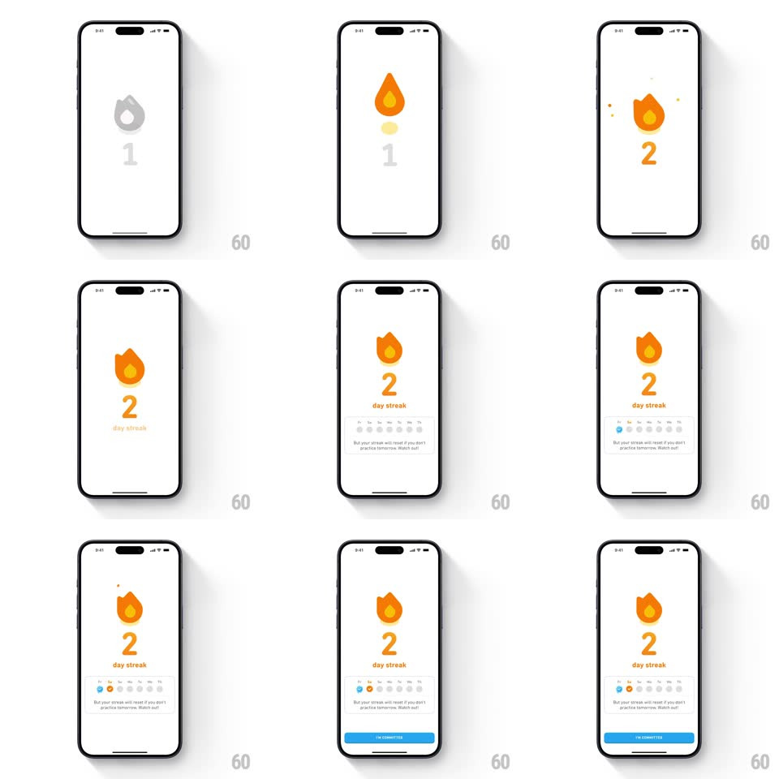

Media
Frame-by-frame

Rebuild this interaction 1:1: Duolingo's 2-day streak milestone - a gray flame icon over a gray "1" ignites into orange, the digit rolls to a bouncing orange "2", "day streak" appears beneath, a week strip fills in its second day dot, and the "I'M COMMITTED" button slides up at the bottom.

Rebuild this interaction 1:1: Duolingo's 2-day streak milestone - a gray flame icon over a gray "1" ignites into orange, the digit rolls to a bouncing orange "2", "day streak" appears beneath, a week strip fills in its second day dot, and the "I'M COMMITTED" button slides up at the bottom.
## Integration
Integration: stack-agnostic spec - springs given as stiffness/damping, timed motions as duration + curve; map every value to your framework and animation library of choice.
## Scene
White screen: centered flame icon over a large digit, "day streak" label, a 7-day week strip (M T W T F S S) with flame/check dots, a streak-warning line ("But your streak will reset if you don't practice tomorrow. Watch out!"), and a blue "I'M COMMITTED" button.
## Motion spec
Pattern: staged ignition celebration.
- The flame ignites: gray -> orange fill sweeps up (300ms) with a quick wobble (rotate +/-6deg, 2 cycles, 400ms); the "1" rolls downward out and "2" bounces in from above (spring ~320/18, ~400ms, overshoot).
- "day streak" fades in under the digit (200ms, 100ms after the digit lands).
- Week strip: slides up from below (300ms) and the second day dot pops in orange (scale 0 -> 1.3 -> 1, 300ms); the warning line fades in under it.
- "I'M COMMITTED" button rises from the bottom edge (spring ~340/22, 350ms), settling last.
- Idle: the flame flickers gently (scale 1 -> 1.04 -> 1, 800ms loop) once everything lands.
## Calibration
- Sequence is ignition first, UI chrome second - flame and digit complete before the strip and button enter.
- Grays are distinctly desaturated so the orange ignition reads as the event.
## Reduced motion
All elements fade in place (200ms, staggered 80ms); flame crossfades gray -> orange.
## Don't miss
- The digit's bounce is the biggest motion on screen - everything else is smaller.
- The warning line is part of the milestone screen, not a separate alert.